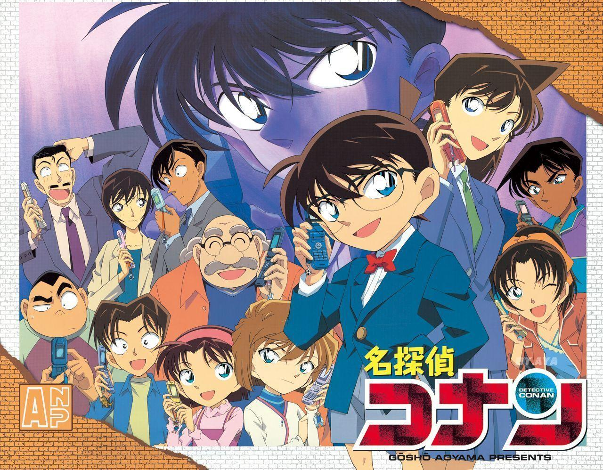

Welcome to Detective Conan Gallery
With over a thousand manga chapters and dozens of movies, the Case Closed universe is massive. Explore these quick, easy-to-read profiles covering everyone from genius high school detectives to elusive Black Organization members, ensuring you never miss a beat in the ongoing mystery.
The story
The plot of Detective Conan follows Shinichi Kudo, a brilliant high school detective who is transformed into a young child after a brush with a dangerous criminal syndicate. While investigating a pair of suspicious men in black, Shinichi is ambushed and forced to ingest an experimental, untested poison called APTX 4869. Instead of killing him, the drug has a rare side effect that de-ages his body to the size of a seven-year-old while leaving his intellect fully intact.
To protect those around him from the syndicate, he adopts the alias Conan Edogawa and moves in with his childhood friend, Ran Mouri, and her bumbling private investigator father, Kogoro Mouri. Conan continues to solve crimes behind the scenes to avoid detection. At school, he forms a group, the Detective Boys, with several classmates to solve smaller mysteries, later joined by Ai Haibara, a former member of the syndicate who also shrunk herself to escape.
The overarching narrative focuses on Conan's hunt for the Black Organization. He works to intercept their operations and gather intelligence on their hierarchy, often collaborating with law enforcement institutions, in the hopes of finding a permanent cure to regain his original body.
